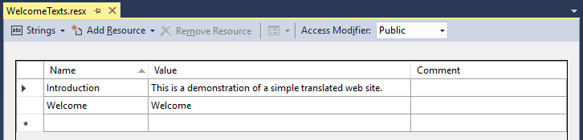

Translating ASP.NET MVC
Resource files are the easiest way to translate ASP.NET MVC applications into multiple languages. They are XML files containing name-value pairs for a specific language.
WelcomeTexts.resx WelcomeTexts.de.resx WelcomeTexts.sv-SE.resx WelcomeTexts.uz-Cyrl-UZ.resx
Above are examples of resource file names. The language of the resource file is denoted by a BCP 47 language tag. When .NET looks up a resource by name it will choose the most appropriate file available (e.g. using en if en-US doesn’t exist). The last resort is to use the resource file without a language identifier. This file must exist and it must contain all resource names you want to use or .NET will not find them.
Using the resource files
When you create a new resource file in Visual Studio it will also generate a .NET class with members for each name. The class is regenerated when you rebuild the project to keep up to date with the resource file.
Note: By default Visual Studio will set the access modifier of the class to Internal. To be able to use them in your Razor files you want to change this to Public. This can be changed in the GUI, just above the editor. Or you can change the Custom Tool property from ResXFileCodeGenerator to PublicResXFileCodeGenerator manually in the Properties.
I prefer to use the postfix Texts on all my resource files to keep the generated class names from clashing with my other classes.
@using TranslatedApplication.Resources
<!DOCTYPE html>
<html>
<head>
<title>@WelcomeTexts.Welcome</title>
</head>
<body>
<h1>@WelcomeTexts.Welcome</h1>
<p>
@WelcomeTexts.Introduction
</p>
</body>
</html>Setting the language
.NET chooses which resource file to use based on the language of the current thread. Specifically, it looks at the CurrentUICulture of the thread. We must set it at the start of every HTTP request.
The user should be given the option to change the language. But I also like to start with an educated guess based on the user’s language settings, which are sent to us by the browser.
To set the language I recommend creating an action filter attribute that performs the necessary steps before each controller action executes.
namespace TranslatedApplication.Infrastructure.Attributes
{
public class LocalizeAttribute : ActionFilterAttribute, IActionFilter
{
private readonly string[] SupportedLanguages = {"en", "sv"};
private const string DefaultLanguge = "en";
void IActionFilter.OnActionExecuting(ActionExecutingContext filterContext)
{
string language = DefaultLanguge;
HttpRequestBase request = filterContext.HttpContext.Request;
HttpCookie cookie = request.Cookies["Language"];
if(cookie != null && SupportedLanguages.Contains(cookie.Value))
{
language = cookie.Value;
}
else if(request.UserLanguages != null)
{
foreach(string userLang in request.UserLanguages)
{
string lang = userLang;
if(lang.Length < 2) continue;
if(lang.Contains('-'))
lang = lang.Substring(0, lang.IndexOf('-'));
if(SupportedLanguages.Contains(lang))
{
language = lang;
break;
}
}
}
CultureInfo culture = new CultureInfo(language);
Thread.CurrentThread.CurrentCulture = culture;
Thread.CurrentThread.CurrentUICulture = culture;
}
}
}To make the attribute apply to all controller actions, add it to the global filters in FilterConfig.cs. This file should be in the App_Start directory, create it if it doesn’t exist.
namespace TranslatedApplication
{
public class FilterConfig
{
public static void RegisterGlobalFilters(GlobalFilterCollection filters)
{
filters.Add(new LocalizeAttribute());
}
}
}Finally, make sure the following line is in the Application_Start method in Global.asax.
FilterConfig.RegisterGlobalFilters(GlobalFilters.Filters);To let the user change the language themselves, add a controller action for it. The page has to be reloaded to reflect the change.
public class LocaleController : Controller
{
public ActionResult Switch(string language)
{
Response.Cookies["Language"].Value = language;
return Redirect("/");
}
}